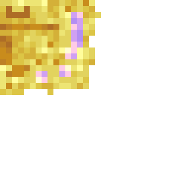

特殊SpellArrow弹药先检查mana capability；无mana返回原生Arrow。非玩家或主手不是ICasterTool时返回父ArrowItem工厂。先new出的未返回自定义箭不是已入世界的额外箭。
仅所读固定版本工厂，不代表所有其他射手/附魔模组。只读研究；0个新增家族、0个验收计数。软件/源码证据，不是游戏验证。
逐项证据与阅读范围 · 固定版本与来源 · 96面UV检查 · 本地一致性检查

特殊SpellArrow弹药先检查mana capability；无mana返回原生Arrow。非玩家或主手不是ICasterTool时返回父ArrowItem工厂。先new出的未返回自定义箭不是已入世界的额外箭。
仅所读固定版本工厂，不代表所有其他射手/附魔模组。所读SpellCrossbow未重写getSpellCaster，使用ICasterTool默认new SpellCaster(stack)。其构造从NBT反序列化新的Spell；getSpell返回本次caster内存对象；modifySpell append没有调用writeItem。此路径不能宣称永久给武器追加增幅。
其他ICasterTool实现可以覆盖工厂；未把所有法器推为同样行为。SpellContext保存传入Spell引用，复制casterTool ItemStack，另克隆颜色。这个上下文/工具快照与射手主手条件须分开。
引用/复制结论限这些字段；无线程、NBT持久化或实际耗蓝成功断言。普通Items.ARROW且isSpell会替换为buildSpellArrow；SpellArrow特殊弹药则使用其工厂结果，只有结果确为EntitySpellArrow才叠加弩穿透与设置拖尾颜色。
同一家族不同分支，不拆成新参考；addFreshEntity成功仍未实测。特殊箭RGB为三个自定义SynchedEntityData字段，setColors只写这三项；client拖尾消费RGB。并非原生Arrow的ID_EFFECT_COLOR。
包到达/粒子设置/其他扩展仍影响观感；不把拖尾颜色说成整根箭染色。ENTITY_SPELL_ARROW实际绑定TippableArrowRenderer，后者仅用Arrow.getColor()>0选择原版tipped_arrow.png或arrow.png；ArrowRenderer顶点是白色不额外使用自定义RGB。
所读默认自定义箭不设置原生药水色，因此该路径选普通arrow；外部修改/getColor覆盖不在结论中。箭身使用entityCutout与原版交叉平面/尾部面，0.05625缩放、插值yaw/pitch及shake；并未加载弩的geo.json给飞行箭。
尺度是所读模型局部，不是游戏命中箱或所有姿态截图。EntitySpellArrow重写getAddEntityPacket使用NetworkHooks；Neo47.1.64 NetworkHooks将PlayMessages.SpawnEntity封为PLAY_TO_CLIENT。不能直接套B09原生Projectile的owner runtime ID字段。
框架源码精确版本重建；未运行网络。SpawnEntity基本字段为type、entity ID/UUID、位置角度速度，无单独owner字段；只有IEntityAdditionalSpawnData能额外写读。对应注册customClientFactory调用客户端构造，而构造只super(type,world)，不解析packet。
选定生成路径没有显式恢复owner；不据此声称服务端owner丢失、客户端所有外部包都不可能补充。原生父类层级见既有B08。Neo生成包handle设置位置/旋转/ID/UUID，add到ClientLevel，lerpMotion初速度，再读额外数据；速度发送被限[-3.9,3.9]并量化8000。
这只是初始包；后续ServerEntity速度/位移包不能据此断言永远限速。弩真实PNG32×32与geo声明一致；16个cuboid共96个逐面UV矩形，负uv_size表示有方向的范围，不能仅因负值判出界。
只检查显式UV与PNG尺寸/像素，不是Gecko运行烘焙或玩家握持验收。gem的六个2×2 UV面是粉紫/淡黄色阶且alpha255，并非纯白中性图；宝石保留getRenderColor乘色，其他骨骼强制白色alpha1；最终entityTranslucent。
原图观察和逐面采样，不宣称游戏最终色；光照/色调/外部资源包仍未验证。近手粒子仅FIRST_PERSON_RIGHT_HAND且未暂停分支，由本地player、当前stack法术色计算；renderFinal也读取本地player使用状态。
不是所有第三人称/NPC都获得同一效果的证明；既有Gecko renderFinal时序限制沿用B08。EntitySpellArrow普通字段resolver/pierceLeft/lastHit未见本类NBT覆盖；Arrow父类保存Potion/Color/effects并继承更上层Owner。本类RGB≠父类Color保存。
父类NBT与完整本类的既有B06/B09研究相互补充；本批不宣称reload后技能仍完整或已复现失效。后续继续原范围未读的真实链/消费者，已认可资产保持；不以文件数、UV面数或本地校验替代100/1000参考。